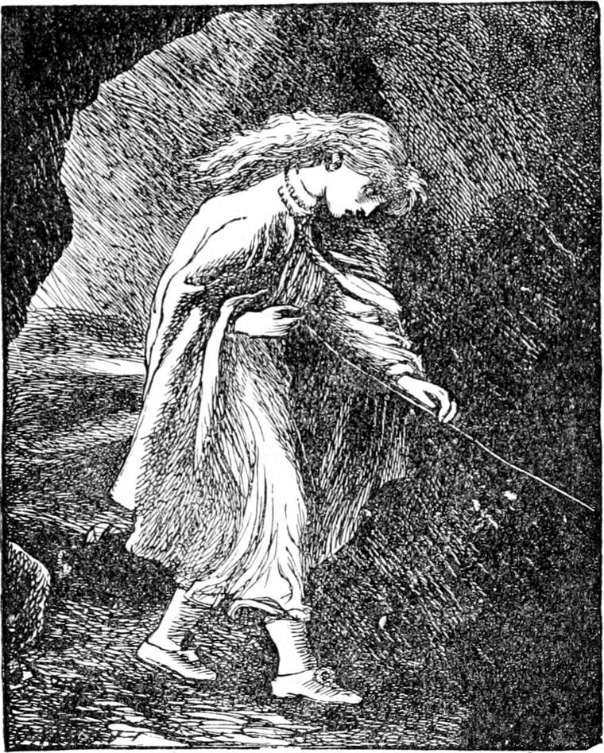

That same morning early, the princess woke in a terrible fright. There was a hideous noise in her room—creatures snarling and hissing and rocketing about as if they were fighting. The moment she came to herself, she remembered something she had never thought of again—what her grandmother told her to do when she was frightened. She immediately took off her ring and put it under her pillow. As she did so she fancied she felt a finger and thumb take it gently from under her palm. 'It must be my grandmother!' she said to herself, and the thought gave her such courage that she stopped to put on her dainty little slippers before running from the room. While doing this she caught sight of a long cloak of sky-blue, thrown over the back of a chair by the bedside. She had never seen it before but it was evidently waiting for her. She put it on, and then, feeling with the forefinger of her right hand, soon found her grandmother's thread, which she proceeded at once to follow, expecting it would lead her straight up the old stair. When she reached the door she found it went down and ran along the floor, so that she had almost to crawl in order to keep a hold of it. Then, to her surprise, and somewhat to her dismay, she found that instead of leading her towards the stair it turned in quite the opposite direction. It led her through certain narrow passages towards the kitchen, turning aside ere she reached it, and guiding her to a door which communicated with a small back yard. Some of the maids were already up, and this door was standing open. Across the yard the thread still ran along the ground, until it brought her to a door in the wall which opened upon the mountainside. When she had passed through, the thread rose to about half her height, and she could hold it with ease as she walked. It led her straight up the mountain.
The cause of her alarm was less frightful than she supposed. The cook's great black cat, pursued by the housekeeper's terrier, had bounced against her bedroom door, which had not been properly fastened, and the two had burst into the room together and commenced a battle royal. How the nurse came to sleep through it was a mystery, but I suspect the old lady had something to do with it.
It was a clear warm morning. The wind blew deliciously over the Mountainside. Here and there she saw a late primrose but she did not stop to call upon them. The sky was mottled with small clouds.
The sun was not yet up, but some of their fluffy edges had caught his light, and hung out orange and gold-coloured fringes upon the air. The dew lay in round drops upon the leaves, and hung like tiny diamond ear-rings from the blades of grass about her path.
'How lovely that bit of gossamer is!' thought the princess, looking at a long undulating line that shone at some distance from her up the hill. It was not the time for gossamers though; and Irene soon discovered that it was her own thread she saw shining on before her in the light of the morning. It was leading her she knew not whither; but she had never in her life been out before sunrise, and everything was so fresh and cool and lively and full of something coming, that she felt too happy to be afraid of anything.
After leading her up a good distance, the thread turned to the left, and down the path upon which she and Lootie had met Curdie. But she never thought of that, for now in the morning light, with its far outlook over the country, no path could have been more open and airy and cheerful. She could see the road almost to the horizon, along which she had so often watched her king-papa and his troop come shining, with the bugle-blast cleaving the air before them; and it was like a companion to her. Down and down the path went, then up, and then down and then up again, getting rugged and more rugged as it went; and still along the path went the silvery thread, and still along the thread went Irene's little rosy-tipped forefinger. By and by she came to a little stream that jabbered and prattled down the hill, and up the side of the stream went both path and thread. And still the path grew rougher and steeper, and the mountain grew wilder, till Irene began to think she was going a very long way from home; and when she turned to look back she saw that the level country had vanished and the rough bare mountain had closed in about her. But still on went the thread, and on went the princess. Everything around her was getting brighter and brighter as the sun came nearer; till at length his first rays all at once alighted on the top of a rock before her, like some golden creature fresh from the sky. Then she saw that the little stream ran out of a hole in that rock, that the path did not go past the rock, and that the thread was leading her straight up to it. A shudder ran through her from head to foot when she found that the thread was actually taking her into the hole out of which the stream ran. It ran out babbling joyously, but she had to go in.
She did not hesitate. Right into the hole she went, which was high enough to let her walk without stooping. For a little way there was a brown glimmer, but at the first turn it all but ceased, and before she had gone many paces she was in total darkness. Then she began to be frightened indeed. Every moment she kept feeling the thread backwards and forwards, and as she went farther and farther into the darkness of the great hollow mountain, she kept thinking more and more about her grandmother, and all that she had said to her, and how kind she had been, and how beautiful she was, and all about her lovely room, and the fire of roses, and the great lamp that sent its light through stone walls. And she became more and more sure that the thread could not have gone there of itself, and that her grandmother must have sent it. But it tried her dreadfully when the path went down very steep, and especially when she came to places where she had to go down rough stairs, and even sometimes a ladder. Through one narrow passage after another, over lumps of rock and sand and clay, the thread guided her, until she came to a small hole through which she had to creep. Finding no change on the other side, 'Shall I ever get back?' she thought, over and over again, wondering at herself that she was not ten times more frightened, and often feeling as if she were only walking in the story of a dream. Sometimes she heard the noise of water, a dull gurgling inside the rock. By and by she heard the sounds of blows, which came nearer and nearer; but again they grew duller, and almost died away. In a hundred directions she turned, obedient to the guiding thread.

At last she spied a dull red shine, and came up to the mica window, and thence away and round about, and right, into a cavern, where glowed the red embers of a fire. Here the thread began to rise. It rose as high as her head and higher still. What should she do if she lost her hold? She was pulling it down: She might break it! She could see it far up, glowing as red as her fire-opal in the light of the embers.
But presently she came to a huge heap of stones, piled in a slope against the wall of the cavern. On these she climbed, and soon recovered the level of the thread only however to find, the next moment, that it vanished through the heap of stones, and left her standing on it, with her face to the solid rock. For one terrible moment she felt as if her grandmother had forsaken her. The thread which the spiders had spun far over the seas, which her grandmother had sat in the moonlight and spun again for her, which she had tempered in the rose-fire and tied to her opal ring, had left her—had gone where she could no longer follow it—had brought her into a horrible cavern, and there left her! She was forsaken indeed!
'When shall I wake?' she said to herself in an agony, but the same moment knew that it was no dream. She threw herself upon the heap, and began to cry. It was well she did not know what creatures, one of them with stone shoes on her feet, were lying in the next cave. But neither did she know who was on the other side of the slab.
At length the thought struck her that at least she could follow the thread backwards, and thus get out of the mountain, and home. She rose at once, and found the thread. But the instant she tried to feel it backwards, it vanished from her touch. Forwards, it led her hand up to the heap of stones—backwards it seemed nowhere. Neither could she see it as before in the light of the fire. She burst into a wailing cry, and again threw herself down on the stones.